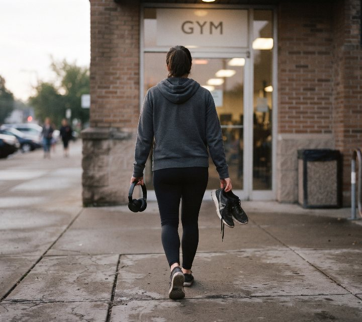
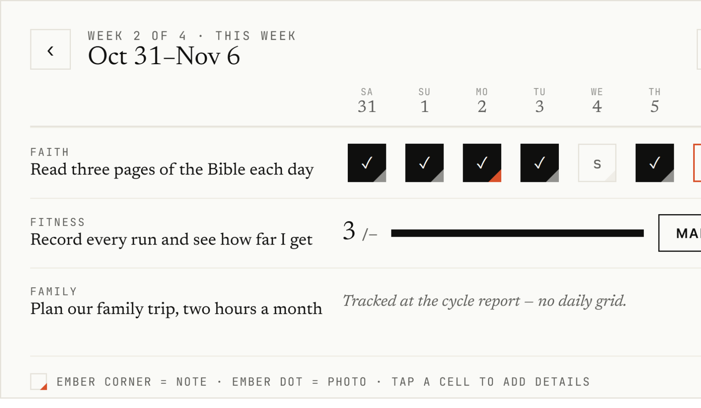

What are the types of personal goals?
Personal goals are aims you set for your own life, not for an employer. They sort three ways: by life area (faith, family, fitness, work, and personal), by shape (process, outcome, learning, or open), and by time frame. Most people hold goals in several areas at once and choose them for the year.
- Every goal has a life area, a shape, and a time frame.
- Name the accomplishment you want, then commit to the action that gets you there.
- A commitment can be daily, weekly, or monthly; your group still reports on its own cycle.
- Track only as much as a commitment needs; the report at the cycle close is what counts.
- Before you commit, count what it takes: time, money, help, and trade-offs with family.
Find an example on the grid. Pick the row for a life area, then the column for a goal shape. Each area has its own section below, and the four shapes follow them.
| Area / shape | Process | Outcome | Learning | Open |
|---|---|---|---|---|
| Faith | Read three pages of the Bible each day | Finish a 90-day Gospel devotional by Easter | Try two ways to keep a daily quiet time | Count the mornings I journal with scripture this month |
| Family | Two dates with my spouse each month | Take a week-long family road trip this summer | Learn three ways to plan a trip on a budget | Count the evenings the phone stays off this month |
| Fitness | Three strength sessions a week | Finish a marathon in the fall | Learn three strength lifts with good form | Record every run this month and see how far I get |
| Work | One protected hour a week on a business idea | Ship one project this quarter | Learn to build a monthly budget | Count the prospect calls I make this month |
| Personal | Call a friend or family member each week | Hold a ten-minute conversation in Spanish by March | Try three ways to practice piano | Count the books I finish this year |
● ○ ○ ○ ○ ○ Swipe for more
A teaching aid: every goal has an area and a shape. Examples are illustrative.
The types of personal goals at a glance
- 01Faith goalsPrayer, scripture, worship, service, and giving, written as practices you choose to keep.
- 02Family goalsSpouse, children, parents, and time together, often kept on a monthly rhythm.
- 03Fitness goalsTraining, movement, sleep, and recovery, written as sessions you repeat each week.
- 04Work goalsCareer, business, and money, written around the time and work you put in.
- 05Personal goalsFriendships, reading, hobbies, and skills, measured by practice kept or things finished.
- 06Goal shapesProcess, outcome, learning, and open goals: what each one measures.
- 07Time framesLong-term direction, this year’s commitments, and the cycle you report on.
- 08Choose what to commit toQuestions that turn a wish into a commitment, or a reason to wait.
- 09Goals and accountabilityHolding yourself to a goal, and letting a partner or group ask.
Build faith goals around practices you choose to keep
Faith goals cover prayer, scripture, worship, service, and giving, and they hold best as a practice you choose to keep on a set rhythm.
- →Instead of “Read the Bible more”
Read three pages of the Bible each day
- →Instead of “Pray more”
Pray with my spouse twice a week
- →Instead of “Grow in my faith”
Read for one hour a week from a book on faith
- →Instead of “Get into the Gospels”
Finish a 90-day Gospel devotional by Easter
- →Instead of “Be more generous”
Give a set amount on the first of every month
Examples are illustrative.
A checked box shows you kept the practice you chose. It doesn’t measure spiritual growth, and nobody should treat it that way. If you already meet with a small group or a prayer partner, that meeting is a natural place to report back.
Give family goals the rhythm they need, often monthly
Family goals cover your spouse, children, parents, and time together, and many run monthly: a date, a one-on-one, a trip you plan together.
| Commitment | How often | What you’d say at a monthly report |
|---|---|---|
| Two dates with my spouse | Monthly | Both happened; the second moved back a week. |
| Two hours planning our family trip | Monthly | Used the time to compare three options. No daily log. |
| One hour with each child on music, sport, or reading | Weekly | Kept it three weeks out of four; travel took one. |
| Phone off from arriving home to bedtime | Four weekdays | Kept it most nights; Thursdays slipped. |
Examples are illustrative, not member reports.
A monthly commitment doesn’t need a daily grid. Two hours of trip planning a month is a complete commitment, and the report says what you did with them. The group reports on its own cycle, whatever each commitment’s rhythm.
Commit to the training, and let the race be the accomplishment
Fitness goals cover training, movement, sleep, and recovery; the commitment is usually the sessions, and the race or the lift is the accomplishment they serve.
- →Instead of “Get in shape”
Three strength sessions a week
- →Instead of “Run a marathon”
Follow my training plan’s sessions every week
- →Instead of “Be more flexible”
Stretch for 15 minutes on four days a week
- →Instead of “Sleep more”
Lights off by 11 p.m. on weeknights
Examples are illustrative.

Plan in months. In a review of 20 studies on habit formation, a new health behavior typically took about 59 to 66 days to feel automatic. A training app, a calendar, or a notebook can help you recall the sessions; the report is where you account for them.
Aim work goals at the time and work you put in
Work goals cover your career, a business, and money, and they hold best when they name the time or work you put in, not the title or the revenue.
- →Instead of “Grow the business”
Protect one hour a week to develop a product idea
- →Instead of “Get more customers”
Make 45 calls to prospective customers each month
- →Instead of “Get promoted”
Ship one project this quarter that I can show in my review
- →Instead of “Run things better”
Put one operational improvement in place each month
- →Instead of “Save more”
Move $100 into savings every Friday
Examples are illustrative.
Time spent is a fair commitment when the result isn’t in your hands yet. A promotion or a sale depends partly on other people; the hour and the calls don’t. To see where your money stands first, take the Consumer Financial Protection Bureau’s free 10-question financial well-being check.
Keep personal goals as practice you enjoy or things you finish
Personal goals cover friendships, reading, hobbies, and new skills, and you can measure them by the practice you keep or by something you finish.
- →Instead of “Stay in touch”
Call one friend or family member each week and see one in person each month
- →Instead of “Read more”
Read for 30 minutes a day
- →Instead of “Learn piano”
Practice for 20 minutes on three days a week
- →Instead of “Learn Spanish”
Hold a ten-minute conversation in Spanish by March
Examples are illustrative.
Practice time is a real commitment; not every hobby needs an output target. Turn character goals into a behavior: “be more grateful” becomes “write down three things each night.” More on making growth stick is in the self-improvement guide.
Know the four goal shapes: process, outcome, learning, and open
Every goal also has a shape, which decides what you measure: the actions you take, a result by a date, a skill you are learning, or how far you get.
| Goal shape | What it targets | Example | Works best when |
|---|---|---|---|
| Process | Actions you control | Three strength sessions a week | You know what to do and need to do it consistently |
| Outcome | A result by a date | Finish a marathon in the fall | You want a direction to aim the process at |
| Learning | A skill or strategy to master | Learn three ways to pace a long run | You don’t yet have the skills the goal needs |
| Open | Seeing how far you get, with no target | Record every run this month and see how far you get | You are new to it or returning after a long break |
Examples are illustrative.

In a group, the commitment you report on is usually a process goal, and an outcome goal is often the accomplishment it serves. Use learning goals when you lack the skills a task needs, and open goals when you are starting out: early evidence from a small study found beginners did better and enjoyed them more.
In Accountability Guild, how you track is a separate choice from the shape: daily marks, a running tally with no target, or nothing until the cycle report. Every member reports at the cycle close either way.
Connect your long-term direction to this year’s commitments
Goals also sort by time frame: a direction you may hold for years, the commitments you choose for this year, and the cycle you report on.
Three clocks: what you want, how often you act, and when you report. Example is illustrative.
You don’t have to break every aim into quarters, months, and weeks. Some commitments repeat, some are a monthly action, and some are a dated deliverable. Many groups set the year’s commitments in January; a focused eight to twelve weeks works too when a season calls for it.
No long-term direction yet? The life planning guide starts there. Setting and reporting on the year’s goals is in the goal setting guide, and a 30-day accountability sprint shows one focused month.
Choose what to commit to, and what can wait
Not everyone starts knowing what they want, so work from narrow questions, then count what each idea would take before you commit to it.
- ✓
What do I want to build, experience, learn, or keep going this year?
- ✓
What action am I willing to commit to and report on?
- ✓
What would it take: time, money, practice, help, and trade-offs with family?
- ✓
What would I tell my group at the next report?
An idea that fails the third question can wait. Deferring a bucket-list trip or a second business is a choice, not a failure. You can hold commitments in several areas at once; in a demanding season, say which one gets less.
Not sure where things stand? A personal life audit rates each area first. Then write down how you will report on each one: in a study of 512 real goals, fewer than a quarter said how success would be measured.
Hold yourself to your goals, then let someone else ask
Every commitment on this page ends in something you can report: a practice kept, a session done, an hour protected, a call made.
On your own
Check your log, calendar, or notebook on a set day, and write yourself a short report each cycle.
With a partner
One person asks on a set day. A spouse, friend, or prayer partner already knows the context.
With a group
Members present their goals, hear the group out, decide for themselves, and report on the same cycle.
In a large review of 141 studies, goal setting worked better when goals were public and set as a group. More on following through on your own is in the personal accountability guide. To run the check-in well, see how to run accountability check-ins that change behavior.
Pick your goals, then keep them with a group that reads the reports.
Each member commits to goals anyone could check, tracks as much as helps, and reports at each cycle close. The group sees who followed through.
- 01Present your goals to the group
- 02Track as much as helps
- 03Report at each cycle close
Keep going: choose your next step
● ○ ○ ○ Swipe for more